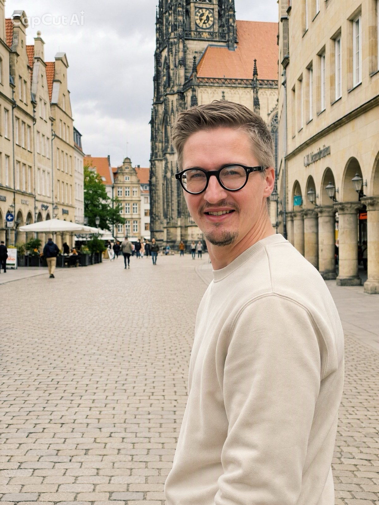

Ehrlich gesagt
Ich will
nicht
nur Zeit gegen Geld tauschen.

Ich will Dinge bauen, deren Wert
vom Ergebnis
kommt.
Darum baue ich mit
KI.
Apps, Websites, Automatisierung.
Und zeige dir, wie du deine
Idee
umsetzt.
Welche Idee trägst du
zu lange
mit dir rum?
Schreib sie in die Kommentare.
Maik · Flow Media AI
Komm in den Flow